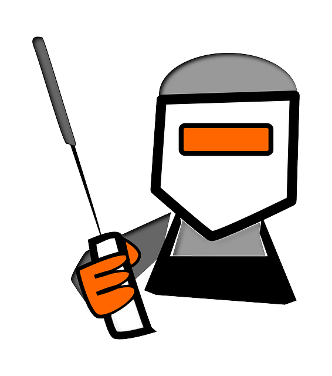
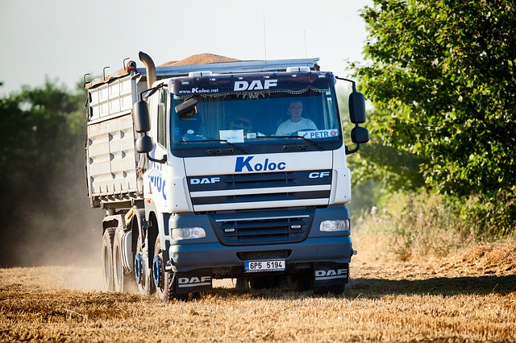
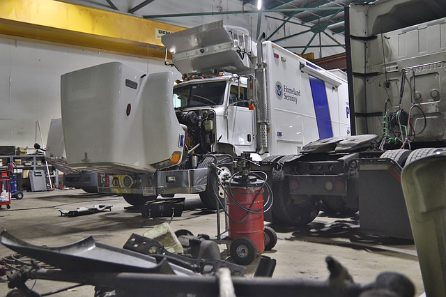

- Loading and sorting tyres
- Transporting waste and tyre parts to the shredding machine using a forklift truck
- Operating basic shredding machines: checking power supply, adjusting simple parameters, reacting in case of breakdowns
- Keeping the workplace clean
Vacancies
Клиент в Белгия търси физически работник, с основни познания по Английски език.
За повече информация можете да се свържете с мен на посочения телефонен номер или чрез Whatsapp, Viber, емайл.
Customer in Belgium is looking for PHYSICAL WORKER.
Gross salary an hour 13e.
- Willingness to work physically and in the 2-shifts system
- Basic English language
- Experience in physical works will be an asset
- A stable job with a Belgian contract
- An attractive salary supplemented by shift allowances and food vouchers
- Bonuses: 13th month, holiday pay, mileage allowance, family allowance, health and accident insurance, paid holidays
- Accommodation close to the place of work
Customer in Belgium is looking for MACHINE OPERATOR.
Gross salary an hour 13,6-15e.
- Taking care of the continuity of machinery operation
- Operate machines for the production of mattress springs
- Setting machine parameters according to production requirements
- Ensuring that production runs smoothly
- Execution of daily production plans

- Experience in a similar position
- High school diploma
- Communicative knowledge of English or Dutch
- Ready to work in two shifts (at the beginning only day shift)
- Salary dependent on experience (paid weekly)
- Food cheques of € 4.10 per day worked
- Belgian employment contract
- Bonuses: 13th salary, holiday pay, mileage allowance, family allowance, health and accident insurance
- Accommodation close to the workplace
Customer in Belgium is looking for QUALITY CONTROLER.
Salary an hour 14-16e gross.
- Accurate control of production lines, inputs and outputs to identify any problems and remove them from the production process
- Checking the previous day's production with reference samples and production documents
- Quality control and laboratory tests according to the quality plan and the manual
- Administrative tasks in the quality department
- Indicating non-compliances with HACCP principles in a friendly but assertive manner
- Participation in interesting quality projects and support of the quality control coordinator if necessary
- Approximately 5 years of experience in a similar position in the food industry
- Ability to work as part of a team in a precise and organised manner
- Willingness to work 2 shifts
- Good knowledge of English language
- A stable job with a Belgium contract in an enthusiastic and energetic team
- Attractive salary + shift bonus (in the case of shift work) + food vouchers
- Opportunities for personal development
- All Belgian bonuses: 13th month pay, holiday pay, mileage allowance, family allowance, accident and health insurance
- Reimbursement of travel expenses to Belgium
Customer in Belgium is looking for Welding Robot Operator.
Salary an hour 15-16e gross.
- Getting acquainted with the specification of manufactured elements based on designs and technical drawings
- Operation of the welding robot by placing the appropriate elements in the machine and operating the control panel
- Finishing workpieces: remove spatter, grind and re-weld if necessary
- Welding quality control, storage of finished parts

- Experience in servicing a welding robot minimum 2-3 years
- The ability to read technical drawings
- Taking care of the performed elements
- Good knowledge of English language
- Willingness to work physically, including overtime
- Experience with forklifts is a plus
- Attractive salary depending on experience
- Bonuses: 13th salary, holiday money, mileage allowance, health and accident insurance
- Reimbursement for the first trip to Belgium
- Accommodation close to the workplace
Customer in Belgium is looking for Truck driver C category,
estimated weekly salary 415-500e ( net after taxes and deductions )
You deliver 10 to 15 do-it-yourself shops a day, mainly in Belgium. Your truck is loaded for you but you unload at the clients by manual or electrical transpallet. You can drive a manual and automatic gearbox and are used to work with a boardcomputer. You are able to use the loading bridge.

- Minimum 2 years of relevant experience.
- Communicative English or French.
- Driving license C category + driver card and code 95
- Long term employment
- Benefits
- Weekly payment
- Living place
- For more details, contact me by phone, email or message.
Customer in Belgium is looking for construction workers
Current vacancies : Concrete Carpenter, Bricklayer, Carpenter, Plaster Boarder.
Salary depending on the vacancy and experience, starting from 480 euro up until 540 euro net per week.
- Good communication skills ( English or German )
- Proven experience
- VCA certificate preferable
- Driving license
- Willing to work 40 hours or more

- Long term employment
- Living place
- Weekly salary and benefits
- If you are interested, feel free to contact me.
Customer in Belgium is looking for technical ( skilled ) workers
Current vacancies:Plumber, Welder, Electrician. Salary, depending on the vacancy and experience,
starting from 500 euro up until 540 euro net per week.
- Good communication skills (English or German)
- Proven experience
- VCA certificate preferable
- Driving license
- Willing to work 40 hours or more

- Long term employment
- Living place
- Weekly salary
- If you are interested, feel free to contact me.
Customer in Belgium is looking for Truck Mechanic
- Diagnosing the condition and faults of machines using diagnostic programs such as: VIDA, STAR DIAGNOSE, ManCats, TEXA, WABCO, etc.
- Performing mechanical, pneumatic, electric and hydraulic repairs on trucks
- Detection of short-circuit sources, replacement of cables and sensors, repair of automatic doors
- Repair and replacement of mechanical elements such as brakes, clutches, filters, gears, suspensions, engines, etc.
- Preparing trucks for pickup, including test drives
- Performing work both in the workshop and at the indicated service point
- Directional education, supported by at least 3 years of experience
- Knowledge of programs for the diagnosis of faults and the principles of operation of mechanical systems
- Knowledge of technical English or Dutch
- Driving license B, C and own car for commuting

- A very attractive salary supplemented with a wide range of bonuses
- Health and accident insurance
- Reimbursement for the first trip to Belgium
- Administrative assistance of the Polish-speaking team of coordinators